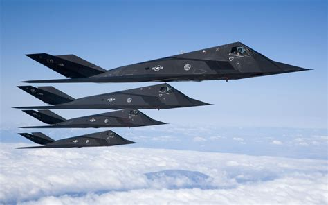

Specifications
| Top speed | Subsonic, approx. 0.92 Mach |
| Range | ~860 nautical miles unrefueled |
| Crew | 1 |
| Introduced | 1983 (retired 2008) |
History & overview
The F-117 Nighthawk was the first operational aircraft built around stealth as its primary design goal. Developed by Lockheed's secretive Skunk Works division, it grew out of research into how flat, angled surfaces could scatter radar energy away from its source. Engineers at the time lacked the computing power to model curved stealth shapes, so the F-117 was built almost entirely from flat panels meeting at sharp angles — giving it the faceted, diamond-like appearance that still makes it instantly recognizable today.
The aircraft entered service in 1983 but remained publicly unacknowledged by the Air Force for several years. It first saw combat during the invasion of Panama in 1989 and gained widespread attention during the Gulf War, where it struck high-value targets in Baghdad while evading Iraqi air defenses. The F-117 was officially retired in 2008, succeeded by the F-22 Raptor and, later, the F-35.
Operational role
The F-117 was designed as a precision strike aircraft, not a dogfighter — it carried no radar of its own and relied on stealth and careful mission planning to avoid detection rather than evade missiles once spotted. Its angular shape was eventually surpassed by smoother stealth designs like the B-2 Spirit, which used curved surfaces to achieve even lower radar visibility. Several retired F-117s remain in flyable storage and have been spotted periodically over U.S. test ranges, including in the vicinity of Eglin AFB, suggesting the airframe still supports some test and threat-simulation work.